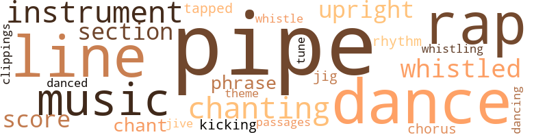
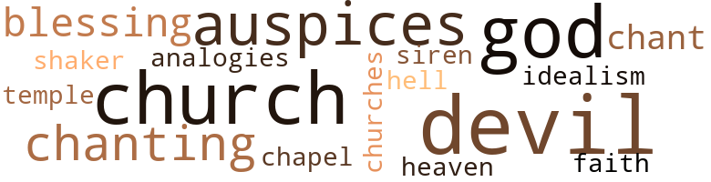

Nigger Factory (The), by Scott-Heron, Gil (2010)
76 music-related terms matched in this text.
Most frequent terms in this topic: pipe (18); line (7); rap (7); dance (5); Music (4)
chant.n.01
Definition: a repetitive song in which as many syllables as necessary are assigned to a single tone
| word | sentence |
|---|---|
| chant | Baker had started a chant of " Hell no ! |
| chant | The crowd of a thousand students pushed its way out of the auditorium and continued the chant on the sidewalks , in the street , and across the oval . |
chorus.n.01
Definition: any utterance produced simultaneously by a group
| word | sentence |
|---|---|
| chorus | Then a chorus of " no 's " rang out . |
clipping.n.01
Definition: an excerpt cut from a newspaper or magazine
| word | sentence |
|---|---|
| clippings | He decided that he would try and find some clippings that he had cut out of various Black magazines depicting the true possibilities in the picture for those who had some romantic notion about a revolutionary picnic on Sutton 's campus when the law arrived . |
dance.n.01
Definition: an artistic form of nonverbal communication
| word | sentence |
|---|---|
| dances | Instead the agenda is full of crap like the allowance for decorations at various dances and allowances for the Home - coming Committee to prepare for the Homecoming Dance ! " |
| dances | He had laughed at the thought of her and at one of the victory dances even made a joke of her crush on him . |
| dance | " We 'll be all right this weekend , " Baker asserted " The Alphas are havin ' some kinda dance . |
| dance | " If we wuz to knock the dance they 'd turn on us , " Cotton quipped . |
| dance | " Cut into some of those dance allowance funds then . |
| dance | It was against school reg - ulations for women to be in the frat houses unless there was a chaperoned dance or some other university-sanctioned function going on . |
dance.n.02
Definition: a party of people assembled for dancing
| word | sentence |
|---|---|
| Dance | Instead the agenda is full of crap like the allowance for decorations at various dances and allowances for the Home - coming Committee to prepare for the Homecoming Dance ! " |
dance.v.03
Definition: skip, leap, or move up and down or sideways
| word | sentence |
|---|---|
| dance | As long as the niggers can dance they 'll be all right . " |
| danced | Once again the vision of the young Calhoun , the young Black radical , the advancer of new psychological theories based on the experiences of Black people , danced through Gloria Calhoun 's mind . |
| dancing | He saw the sparkling shadows of the raindrops dancing across the path of the light outside his second-floor window . |
jig.n.01
Definition: music in three-four time for dancing a jig
| word | sentence |
|---|---|
| jig | The jig iz up . " |
jive.v.01
Definition: dance to jive music; dance the jive
| word | sentence |
|---|---|
| jive | But if he acted as though he did n't know it or did n't care he might be able to jive them into a mistake . |
kick.v.04
Definition: kick a leg up
| word | sentence |
|---|---|
| kicking | He scooted down and away from her and kissed her stomach , kicking his pants off as he moved . |
music.n.01
Definition: an artistic form of auditory communication incorporating instrumental or vocal tones in a structured and continuous manner
| word | sentence |
|---|---|
| Music | ( 8 ) The Music and Art Fund for Visiting Artists be placed under the auspices of the Student Government . |
| Music | " Well , six , seven , and eight would give the SGA supervision over the Student Union Building , the book store , and the Music and Art Fund . " |
| Music | The Student Union Building , book store , and Music and Art Fund all need to be under the auspices of the SGA . |
| Music | The monies from these departments go now into the pockets of Pride of Virginia ( for the canteen ) , Educational Assistance ( books ) , and the Music and Art Fund , which seems to be toss - ing its student monies down into a bottomless pit for the amount of pleasure students receive from the artists they hire . |
musical_instrument.n.01
Definition: any of various devices or contrivances that can be used to produce musical tones or sounds
| word | sentence |
|---|---|
| instruments | It was not for badly needed instruments or uniforms for the march - ing band . |
| instrument | Mallory stood behind his desk for minutes staring down at the instrument . |
| instrument | Calhoun was trying hard to maintain some semblance of order from the stage when Abul Menka ripped the microphone from the wall sockets and wrenched the instrument itself from Calhoun 's hands and dropped it roughly to the floor . |
passage.n.06
Definition: a short section of a musical composition
| word | sentence |
|---|---|
| passages | The men of MJUMBE had watched all but a very few members of the Sutton community depart by car or taxi or bus , through the narrow passages between buildings , around the oval of dead and dying flowers , and through the cast-iron arch with its proclamation , SUTTON UNIVERSITY . |
phrase.n.02
Definition: a short musical passage
| word | sentence |
|---|---|
| phrase | The second time he repeated the phrase it was as though he had come across a new meaning for the two words . |
| phrase | That was the ' catch phrase ' in Calhoun 's pronouncement . . . and all of the ol' guard will fall in behind him waggin ' their tails . " |
pipe.n.04
Definition: a tubular wind instrument
| word | sentence |
|---|---|
| pipe | The president of Sutton University sat in a leather swivel chair behind his desk , smoking a pipe , with a pair of bifocals perched on his nose . |
| pipe | Calhoun boomed , sucking on the pipe . |
| pipe | Calhoun sat back in the chair and puffed the pipe forming a cloud of the sticky-sweet cherry blend tobacco over his head . |
| pipe | Calhoun sucked at his pipe , but the flame was dead . |
| pipe | " Then I can gather that there is a mood of dissent , " Calhoun said through a cloud of smoke from his pipe . |
| pipe | Calhoun was sitting on a cushioned seat trying to light his pipe . |
| pipe | The pipe had gone out again so he pulled out a silver lighter to set fire to the cherry tobacco . |
| pipe | Calhoun stopped his monologue at that time to try and light his pipe . |
| pipe | He placed his pipe down in an ashtray . |
| pipe | He pulled a tan leather pouch from his inside pocket and started to refill his pipe . |
| pipe | He smiled and reached for his pipe and cherry blend . |
| pipe | " 1 know what you said , " Calhoun said , trying to light his pipe . |
| pipe | Calhoun turned away from the chore of lighting his pipe and faced Victor Johnson squarely . |
| pipe | Calhoun finally succeeded in lighting his pipe . |
| pipe | " Tired , " Calhoun spat out , puffing his pipe . |
| pipe | " Probably Thomas or MJUMBE , " Calhoun said , placing his case on the floor and searching through the papers on his desk until he came up with a pipe cleaner . |
| pipe | 'Cause you know as well as I do that if anything happens to any one of them you gon ' be the man with the pipe up his ass when they start handin ' out the blame . " |
| pipe | We cain ' live with a pipe up our assholes , can we ? " |
rap.n.05
Definition: genre of African-American music of the 1980s and 1990s in which rhyming lyrics are chanted to a musical accompaniment; several forms of rap have emerged
| word | sentence |
|---|---|
| rap | Calhoun iz gon na rap ' bout not bein ' able t ' git anybody wit ' the proper credentials to take their places . |
| rap | He 's gon na rap that when they had the annual report there were only about forty students there . |
| rap | He 's gon na rap ' bout professionalism an ' shit like that . |
| rap | He was thinking materialistically that the politi - cal thing he was doing would be another stepping stone for his rap . |
| rap | I mean , you can rap all you want ' bout student power an ' alia that shit , but until the Board gits organized an ' places a clamp on that automatic boot of his ... . |
| rap | " We definitely be sunk if Calhoun come over an ' rap all the bullshit that the parents wan na hear , " Cotton said with a sigh . |
| rap | " Let 's list a few things that we want Baker to rap about when the party starts . |
rhythm.n.04
Definition: the arrangement of spoken words alternating stressed and unstressed elements
| word | sentence |
|---|---|
| rhythm | Their rhythm and speed increased as he strained to hold off against the surging flow of his orgasm . |
score.n.02
Definition: a written form of a musical composition; parts for different instruments appear on separate staves on large pages
| word | sentence |
|---|---|
| score | " I mean , " he continued , " I became the head of the Student-Faculty Alliance because I thought it would give me a chance to more closely associate myself with the students and become a part of some of the meaningful change that my classes are always speaking of as necessary ... we have hassled over the price of a new score - board for the football field . |
| score | " So , uh , this is the score , " Baker stammered uneasily . |
section.n.01
Definition: a self-contained part of a larger composition (written or musical)
| word | sentence |
|---|---|
| section | She had been upset when the call interrupted her movie , when the cab driver tried to take a long route to increase the fare ( thinking perhaps she did n't know the Black section of Sutton ) , and when she got out of the taxi real - izing that she had forgotten her lipstick in the rush and looked like absolute hell . |
| section | We are representatives of what is mosta the time the mos ' stagnant , cautious section of the studen ' body . |
tapdance.v.01
Definition: dance and make rhythmic clicking sounds by means of metal plates nailed to the sole of the dance shoes
| word | sentence |
|---|---|
| tapped | Me and Odds tapped out . |
theme.n.03
Definition: (music) melodic subject of a musical composition
| word | sentence |
|---|---|
| theme | " I ca n't talk that generation gap theme . |
tone.v.01
Definition: utter monotonously and repetitively and rhythmically
| word | sentence |
|---|---|
| chanting | The three SGA representatives became separated briefly dur - ing the surge out of the building , but found themselves staring dumbly at the procession led by Ralph Baker that cut a trail directly across campus to the door of Sutton Hall where the chanting continued . |
| chanting | The chanting had subsided as students watched the green auto cruise around the oval . |
| chanting | " This is Earl Thomas . . . " MJUMBE continued chanting at the door of Sutton Hall hoping to overcome the damper that Earl had put on its demon - stration . |
tune.n.01
Definition: a succession of notes forming a distinctive sequence
| word | sentence |
|---|---|
| line | Not only because she had been married to Ogden Calhoun for almost twenty years , which put her in line for sainthood , but because throughout all their brief encounters she had impressed him with her sincere interest in community problems and genuine concern about the issues confronting Sut - ton students . |
| line | " Well , we called Thomas to take the things to Calhoun , but his line was busy . |
| line | Earl 's line had been busy . |
| line | Even during " Hell Week , " the last week of the indoctrination schedule , when their line , " The Jive Five Plus One " was not allowed to sleep , Abul never complained , never reacted even in private to the paddlings they were receiving or confided in the others during their restless nights in the " Dog House " when they waited nervously for Big Brothers to come in and deal with them . |
| line | " I 'd like an outside line , " Earl said . |
| line | He had yet to trot out onto the baked Virginia soil and take the three laps with which he generally started his practices , but there was a line of perspira - tion reaching his thick eyebrows and sweat stains stood out against his armpits and crotch . |
| line | ... I heard about the meeting when I first got here this morning , but when I tried to call you your line was busy and Miss Felch had told me that you were n't expected to be late so I waited . |
| tune | His car was parked and the motor hummed a throaty tune . |
upright.n.02
Definition: a piano with a vertical sounding board
| word | sentence |
|---|---|
| upright | The president sat bolt upright in the chair . |
| upright | Calhoun asked sitting bolt upright . |
whistle.v.01
Definition: make whistling sounds
| word | sentence |
|---|---|
| whistled | Lawman whistled and turned the paper over after reading the demands through . |
| whistling | Students were whistling , clapping , and stomping their feet . |
| whistle | He nodded , walked toward the players , and the last thing Mallory heard before the wooden door slammed shut was the shrill whistle splitting the early autumn calm . |
| whistled | The newborn wind whistled at him . |
157 violence-related terms matched in this text.
Most frequent terms in this topic: kicked (10); guns (9); fight (7); ball (7); gun (6)
anger.n.01
Definition: a strong emotion; a feeling that is oriented toward some real or supposed grievance
| word | sentence |
|---|---|
| anger | " Bobby Rodgers if you do n't get back in that bed , " Angie said , coming to the table and reaching for her son with mock anger . |
| anger | The object of their anger was not the U.S. Congress , however , but Earl Thomas . |
| Anger | Anger was the most predominant . |
| anger | " I wuz waitin ' fo ' you to bring that up las ' night , " Abul said , his anger and sneering tones dying . |
| anger | He wanted to turn and walk away from her , leaving her there in torment wondering what she had said to anger him . |
| anger | Mrs. Calhoun 's face was bitten with anger , her dark eyes flashing too much despair to withstand the tears she felt about to boil over and smear her carefully prepared makeup . |
animosity.n.01
Definition: a feeling of ill will arousing active hostility
| word | sentence |
|---|---|
| animosity | Baker knew that there was also a great deal of hatred and animosity between King and the university president . |
| animosity | Gone was the animosity he had felt the previous April when told that some skinny , ostrich-looking nigger from Georgia had defeated him for the SGA post . |
blaze_away.v.02
Definition: shoot rapidly and repeatedly
| word | sentence |
|---|---|
| blazed | Calhoun blazed at that remark . |
bombard.v.02
Definition: throw bombs at or attack with bombs
| word | sentence |
|---|---|
| bombed | He was the one who bombed the bus . " |
bullying.n.01
Definition: the act of intimidating a weaker person to make them do something
| word | sentence |
|---|---|
| intimidation | " Or we can tell them that this is a document of intimidation and that the university will continue to work on the problems which face the institution as a whole as we have done in the past . " |
| intimidation | The indication in the meeting had not been one of intimidation . |
| Intimidation | " Intimidation as far as I can see . |
contemn.v.01
Definition: look down on with disdain
| word | sentence |
|---|---|
| despised | He had even tempered his words to appeal to the lackeys and eggheads that he despised . |
craze.n.02
Definition: state of violent mental agitation
| word | sentence |
|---|---|
| frenzy | The rest of the campus is in a frenzy , I suppose . " |
| frenzy | The crowd was on its feet in a veritable frenzy . |
crucify.v.01
Definition: kill by nailing onto a cross
| word | sentence |
|---|---|
| Crucify | " Crucify you ? " |
defy.v.01
Definition: resist or confront with resistance
| word | sentence |
|---|---|
| withstand | Mrs. Calhoun 's face was bitten with anger , her dark eyes flashing too much despair to withstand the tears she felt about to boil over and smear her carefully prepared makeup . |
destroy.v.04
Definition: put (an animal) to death
| word | sentence |
|---|---|
| destroyed | Since then it had changed hands eight times , had been destroyed almost entirely by fire in 1940 , was remodeled twice , but remained a landmark in the area . |
| destroyed | These student leaders touched off two near-riots today when first they seized the stage at a meeting where Calhoun announced plans to close the school , and tonight when students destroyed an estimated eight thousand dollars ' worth of furniture and dormitory equipment . |
draw.v.23
Definition: pull (a person) apart with four horses tied to his extremities, so as to execute him
| word | sentence |
|---|---|
| drew | We had drew up some deman 's fo ' Head Nigger Calhoun an ' we had t ' fin ' out ' bout hi the people felt ' bout things ... I called you befo ' but I got a bizzy signal . " |
| drawn | If we had drawn up statements that documented how much better for students things would have been if we controlled these things and sent copies to the alumni an ' the Board of Trustees . |
| draw | There had been meetings within all fraternal organizations , both male and female , to draw up statements pledging varied degrees of support to the student leaders . |
| drawing | He had been drawing up a list of demands and researching every item carefully with the Board of Trustees and members of the administration . |
| draw | Just as he was about to pull over and allow the Ford to draw abreast of him , the trailing car pulled off down a side street . |
| drawn | He had promised the students then that by the end of the coming September he would have a list of their prime grievances drawn up and ready for their approval . |
erase.v.01
Definition: remove from memory or existence
| word | sentence |
|---|---|
| erase | Miss Felch used the time to erase notes and catch up with the points that had been handled . |
ferocity.n.01
Definition: the property of being wild or turbulent
| word | sentence |
|---|---|
| ferocity | He was by no means intimidated by the huge foot - ball hero , though he had no eagerness to test the myths that had been built up pertaining to the larger man 's strength and ferocity . |
fight.n.02
Definition: the act of fighting; any contest or struggle
| word | sentence |
|---|---|
| fighting | His face was battered by the six years of professional fighting he had endured . |
fight.n.05
Definition: a boxing or wrestling match
| word | sentence |
|---|---|
| fights | In thirty-nine fights he had never been knocked out . |
| fight | It had been all Baker could do to avoid a fight between King and Thomas when Thomas , speaking the day before the election , said that " certain bullies would not be able to threaten anyone into voting against their wishes . " |
| fight | They had good reason to believe that these eight men would not leave Sutton without a fight . |
fight.v.02
Definition: fight against or resist strongly
| word | sentence |
|---|---|
| fight | Though he had never been ranked or made anything that resembled a main event , he had been in demand because he came to fight . |
| fight | You do n't fight a tank with a slingshot . |
| fight | " All brave Black fools who fight when it is not time to fight will be brought to you . " |
| fight | " All brave Black fools who fight when it is not time to fight will be brought to you . " |
| fights | It fights mace , " Abul said . |
| fight | " An ' use the handkerchiefs soaked in vinegar to fight the tear gas . |
| fought | He found himself struggling like a man in quicksand ; the harder he fought the deeper he sank . |
flog.v.01
Definition: beat severely with a whip or rod
| word | sentence |
|---|---|
| lathered | Earl hurried into the shower and lathered himself under the hot spray . |
frustration.n.03
Definition: a feeling of annoyance at being hindered or criticized
| word | sentence |
|---|---|
| frustration | She began to realize that all the frustration she had felt during that time was a result of her need for a strong , mature man . |
| frustration | His tone expressed frustration at the prospect of the bureaucratic whirlpool . |
| frustration | The second phase included Cal - houn 's appointment as the head of the Psychology Department at Small 's College in West Virginia , radical contributions on the causes of Black psychological problems to national psychology journals that lost him his appointment , the loss of their only child , Margaret , from polio at the age of two , and a subsequent wall of frustration built between them by Calhoun 's long , ex - hausting work schedule and his wife 's boredom . |
| frustration | She was relieved that no one had been hurt , but there was clear frustration and tension etched into the corners of her mouth and around her eyes , frowns penciling crooked fur - rows across her forehead . |
fury.n.01
Definition: a feeling of intense anger
| word | sentence |
|---|---|
| rage | The big tackle had a notoriously bad temper and had been expelled from the track team for tearing up the training room during a fit of rage . |
| rage | He knew he must not allow himself the luxury of rage . |
| fury | The reply to this harassment was unleashed fury in the halls of the dormitories where windows were smashed , lounge furniture was thrown through doors and windows , and public address equipment and telephones were ripped from the walls . |
| rage | King exclaimed on the verge of rage . |
gag.v.06
Definition: cause to retch or choke
| word | sentence |
|---|---|
| choked | Everyone except Abul smiled at the grotesque look of horror that masked the editor 's face and the awkward , choked question that had slid from between his tightly closed teeth . |
| choked | Baker almost choked on the words . |
| choking | Every inch of your body would be choking with the smell of forty men , practice jerseys , wintergreen , urine , and the sweaty jocks that lay in a corner hamper . |
| choked | " She probably did n't get over here yet , " Harper choked . |
| choking | " Gittin ' tighter , " Odds noted , making a choking gesture . |
| choked | Evidently everyone had heard because a faint smile choked through their clamped mouths . |
| choking | Chances were that very few of them had ever had a billy club come crashing down on their heads or mace sprayed on them or tear gas choking them and setting their lungs on fire . |
grudge.n.01
Definition: a resentment strong enough to justify retaliation
| word | sentence |
|---|---|
| grievances | " They had some grievances that the students approved . |
| grievances | He had promised the students then that by the end of the coming September he would have a list of their prime grievances drawn up and ready for their approval . |
| grievances | . . . well , they read out this list a deman 's , grievances that they got together for the Head Nigger an ' they say they gon na lay the shit on ' im t ' night . |
gun.n.01
Definition: a weapon that discharges a missile at high velocity (especially from a metal tube or barrel)
| word | sentence |
|---|---|
| guns | ( 5 ) The men of the present Security Service be forced to leave all weapons ( clubs , guns , etc. ) inside the guardhouse while making their rounds . |
| guns | Bobby had a tendency to lose baseballs and guns under beds and sofas and there were times when he had the entire Santa Fe railroad in miniature lined up to make stops all over the house . |
| guns | The thing about the Security Service leavin ' their guns an ' shit in the guardhouse . " |
| gun | In the interim period we can not allow a man without all of his wits about him to walk among us with a gun on his hip . |
| guns | " Number five demands that the Security Service be forced to leave all weapons - clubs , guns , and so forth - inside the guard - house while making their rounds . |
| gun | " They are the ones who seem to be most directly under the gun . |
| guns | " Hi many guns did we have at Jackson State ? |
| guns | Then everybody in the com - munity would be poised to leap on his shit if he sent big guns after us . " |
| guns | " You guys can doodle an ' dally an ' meet an ' pray like a buncha en-double-ay-cee - pee niggers if you want to , but I 'm gettin ' my guns together fo ' t ' night . . . I 'll see yawl at three . " |
| gun | " Without the gun , " Baker said to King 's retreating back . |
| gun | I read once in a magazine an interview wit ' a former political leader at Howard University who said , ' It 's not enough to hoi ' a gun at an administrator 's head . |
| gun | When the meeting broke up he sat at the base of the stairs and put his gun together smoothly and turned , almost anxiously , to the front window where three of the four panes had been reinforced with metal strips . |
| guns | There were no guns , no sticks , no knives . |
| guns | There was a repeating-rifle burst , followed by a thunder - ing from guns . |
| gun | The last explosion was a mammoth roar that none of the four men in Carver Hall would ever believe had come from a gun . |
harassment.n.01
Definition: a feeling of intense annoyance caused by being tormented
| word | sentence |
|---|---|
| harassment | The reply to this harassment was unleashed fury in the halls of the dormitories where windows were smashed , lounge furniture was thrown through doors and windows , and public address equipment and telephones were ripped from the walls . |
hate.n.01
Definition: the emotion of intense dislike; a feeling of dislike so strong that it demands action
| word | sentence |
|---|---|
| hatred | Baker knew that there was also a great deal of hatred and animosity between King and the university president . |
hate.v.01
Definition: dislike intensely; feel antipathy or aversion towards
| word | sentence |
|---|---|
| hate | " You hate Calhoun ? " |
| hate | I hate bullshit . |
| hated | He hated to think of turning the least credit over to a man he considered an enemy , but there was really no way out of it . |
| hated | Abul hated niggers he could n't figure out . |
| detested | He would identify Earl as the leader of the detested militant faction on campus because Earl would present the demands . |
| detested | Not only had the past sixteen hours produced a group of demands that he had seen coming for over six months , but it had also produced a militant student faction called MJUMBE of which he had been totally unaware , a series of conferences that he had detested , and a student strike in the midst of a press conference that had seen him lose almost every ounce of restraint with a Norfolk newspaperman . |
| hate | I hate to go to the country 'cause it generally take so long after you talk to them ' bout everything thass happened since you las ' saw them , but I had bought this oxtail for some oxtail soup an ' I couldn ' see the point in havin ' it without havin ' some good veg ' tables . " |
| hate | He hate ' um now . |
| hate | God , I hate to think that I 'm really hearin ' you sayin ' those sort of things . |
| hate | I hate to think of you callin ' on cliches and lies when I 'm practically down on my knees askin ' you to take a look at what you 're doin ' . " |
| hated | It did n't matter that Earl hated the establish - ment as much as any of the rest of them or even more since he knew exactly how it sucked in Black students and warped their minds . |
| hated | He hated bullshit like this , but he had expected a great deal of it . |
hurt.v.04
Definition: cause damage or affect negatively
| word | sentence |
|---|---|
| hurt | As far as she was concerned all boys needed male figures to identify with and the only question in her mind was how much Bobby would be hurt by the absence of a man in the house . |
infuriate.v.01
Definition: make furious
| word | sentence |
|---|---|
| infuriating | He did n't buy what Baker was saying for a second and the lie was infuriating him more than the overall maneuver . |
injury.n.01
Definition: any physical damage to the body caused by violence or accident or fracture etc.
| word | sentence |
|---|---|
| hurt | She felt hurt again . |
| injury | She hoped that a student 's injury had not been the reason that her husband had not come up the stairs to face her . |
jealousy.n.01
Definition: a feeling of jealous envy (especially of a rival)
| word | sentence |
|---|---|
| jealousy | The students would construe any negative move as jealousy . |
kick.v.04
Definition: kick a leg up
| word | sentence |
|---|---|
| kicking | He scooted down and away from her and kissed her stomach , kicking his pants off as he moved . |
kick_back.v.02
Definition: spring back, as from a forceful thrust
| word | sentence |
|---|---|
| kicked | Earl had half-expected to get kicked out . |
| kicked | Sheila looked as if she had been kicked . |
| kicked | A breeze kicked the colored leaves closer to the curb and across the oval . |
| kicked | Need to have they asses kicked so they go the hell inside ! " |
| kicked | " Then I 'll leave 'cause I wo n't want to see them gettin ' their heads kicked in . " |
| kicked | " Otherwise we get our asses kicked t ' night . " |
| kicked | I started speakin ' up because I knew I had jus ' as much to lose as anybody else an ' I wuzn ' gon na let some big mouth bluffin ' get my ass kicked outta school . |
| kicked | Earl had been kicked to the ground and when his brother had tried to shield his body by crouching over the younger Thomas , a broom handle had crashed into his skull and the last thing Earl remembered was the salty taste of his brother 's blood as the red ooze from the gaping wound covered his face . |
| kick | I know they 'll complain about the lighting an ' all , but kick 'em out of my office an ' bring me a cup of coffee , please . " |
| kicked | He had kicked more student reformers out of school than the presi - dents of any other five schools combined . |
| kicked | " And Earl Thomas has been kicked the hell out . " |
kill.v.10
Definition: cause the death of, without intention
| word | sentence |
|---|---|
| kill | Calhoun is gon na kill this shit dead . |
| kills | Too often also Black people have been forced to copy the white man 's life style and this both frustrates and kills the Blackness and beauty within him . |
| kill | " They 'll have to kill this stupid Black bastard while they pry yo ' asses from between yo ' legs ! " |
knife.n.02
Definition: a weapon with a handle and blade with a sharp point
| word | sentence |
|---|---|
| knives | There were no guns , no sticks , no knives . |
mace.n.01
Definition: (trademark) a liquid that temporarily disables a person; prepared as an aerosol and sprayed in the face, it irritates the eyes and causes dizziness and immobilization
| word | sentence |
|---|---|
| mace | It fights mace , " Abul said . |
malice.n.01
Definition: feeling a need to see others suffer
| word | sentence |
|---|---|
| spite | He felt slimy ; in spite of the brisk October day his clothes were soaked with nervous perspiration . |
musket_ball.n.01
Definition: a solid projectile that is shot by a musket
| word | sentence |
|---|---|
| ball | He was never comfortable until he was on a foot - ball field where all he had to do was knock hell out of anything that moved . |
| ball | So we decided to carry the ball ourselves and Calhoun was n't home . |
| ball | Your heart strait-jacketed in your chest , climbing up bony columns of your throat , tightening you into a gigantic ball . |
| balls | " You bet ' cho balls he is , " Earl asserted . |
| balls | They had him by the balls . |
| balls | " I 'm gon na attribute that remark to pres - sure , because my balls are out there on the line jus ' like yours . |
| ball | He was now under the eight ball . |
| ball | The stocky MJUMBE chieftain , who played linebacker on the foot - ball team , was dressed in a black , short-sleeved dashiki and dark trousers . |
| ball | He was by no means intimidated by the huge foot - ball hero , though he had no eagerness to test the myths that had been built up pertaining to the larger man 's strength and ferocity . |
| ball | We know how hard it is to get organized since we 're always tryin ' to organize things in the frat ... we thought maybe you could , uh , use a little help to get the ball rollin ' an ' get people behind you . " |
open_fire.v.01
Definition: start firing a weapon
| word | sentence |
|---|---|
| fired | She still felt warm when she remembered the way he sat on her desk in front of everybody as though he did n't have a care in the world about being spotted by the boss and fired or reprimanded . |
| fired | " Why do you think they want me fired ? " |
| fire | " Imagine asking me to fire Royce , Beaker , and Harper and wanting to audit all the school books and have me turn everything in the Student Union over to them plus funds so that they can invite the performers and speakers on campus . |
| fired | Flash - bulbs were fired at him . |
| fired | Need I remind Black people of what happened at Jackson State when devil policemen fired into a women 's dormitory ? |
| fired | For nine years I 've watched you fool people and lie to yourself , using Sutton Uni - versity as an example to show everyone that the same tough man who was fired for speaking his mind about Black psychology is still as tough and as hard to overpower as ever . |
| fired | Flashbulbs were fired at the halting trucks . |
pain.v.02
Definition: cause emotional anguish or make miserable
| word | sentence |
|---|---|
| hurt | He knew that she was hurt . |
| hurt | I am hurt because it indicates a lack of communica - tion . |
| hurt | We can hurt no one but ourselves that way . |
| hurt | She crossed her fingers and prayed that none of the students had been hurt . |
parry.v.01
Definition: impede the movement of (an opponent or a ball)
| word | sentence |
|---|---|
| blocking | They left the opposite sidewalk that circled the huge Sutton flower bed and walked into the road blocking off traffic . |
pistol.n.01
Definition: a firearm that is held and fired with one hand
| word | sentence |
|---|---|
| pistol | " You do n't face a bazooka with a water pistol . |
rape.v.01
Definition: force (someone) to have sex against their will
| word | sentence |
|---|---|
| raped | " His mama was raped by a white man six or seven years ago . |
resentment.n.01
Definition: a feeling of deep and bitter anger and ill-will
| word | sentence |
|---|---|
| bitterness | She trembled when she realized how she had nearly never met him , and even after their meeting had almost turned him away with her bitterness and icy reserve . |
rifle.n.01
Definition: a shoulder firearm with a long barrel and a rifled bore
| word | sentence |
|---|---|
| rifle | It was Abul Menka , carrying a .22 caliber rifle with a box of bullets in his hand . |
| rifle | Menka had a Winchester .22 rifle . |
| rifles | Baker and Cotton had identical .30-30 rifles with a case of Norma cartridges and bandoleras . |
riot.n.01
Definition: a public act of violence by an unruly mob
| word | sentence |
|---|---|
| riot | You 're gon na have a real riot if you keep them here . " |
shoot.v.02
Definition: kill by firing a missile
| word | sentence |
|---|---|
| shot | The thought that he had already exhibited too much concern for student opinion shot the silver-haired president straight up in his chair . |
| shot | " I ain ' anxious to stay an ' get shot either , " Odds admitted . |
| shot | Now the whole thing was shot to hell . |
slaughter.n.03
Definition: the savage and excessive killing of many people
| word | sentence |
|---|---|
| slaughter | Need I remind Black people of the slaughter of the four students at Orangeburg ? |
sting.n.03
Definition: a painful wound caused by the thrust of an insect's stinger into skin
| word | sentence |
|---|---|
| bite | " I came in here ta eat , but I don ' feel like I could take a bite without throwin ' up all over this joint . |
| bite | You want to come over here and have a bite to eat ? " |
| bite | I 'm goin ' to O'Jay 's for a bite befo ' I go to the Plantation . " |
strong-arm.v.02
Definition: be bossy towards
| word | sentence |
|---|---|
| bullies | It had been all Baker could do to avoid a fight between King and Thomas when Thomas , speaking the day before the election , said that " certain bullies would not be able to threaten anyone into voting against their wishes . " |
| bullies | The Sutton students had n't dem - onstrated any need to be contained by armed bullies . |
twenty-two.n.02
Definition: a .22 caliber firearm (pistol or rifle)
| word | sentence |
|---|---|
| .22 | It was Abul Menka , carrying a .22 caliber rifle with a box of bullets in his hand . |
| .22 | You do n't risk the lives of future Black mothers jus ' because you have an emotional commitment to a .22 . " |
violence.n.01
Definition: an act of aggression (as one against a person who resists)
| word | sentence |
|---|---|
| violence | ASANTE , Brothers of mjumbe This particular statement was used by Ogden Calhoun to bolster his position when shortly after eight p.m. violence erupted on the campus of Sutton University . |
weapon.n.01
Definition: any instrument or instrumentality used in fighting or hunting
| word | sentence |
|---|---|
| weapons | ( 5 ) The men of the present Security Service be forced to leave all weapons ( clubs , guns , etc. ) inside the guardhouse while making their rounds . |
| weapons | However , it was agreed that the guards will leave their weapons inside the guardhouse from now on . |
| weapons | " Number five demands that the Security Service be forced to leave all weapons - clubs , guns , and so forth - inside the guard - house while making their rounds . |
weather.v.01
Definition: face and withstand with courage
| word | sentence |
|---|---|
| endured | His face was battered by the six years of professional fighting he had endured . |
| brave | " All brave Black fools who fight when it is not time to fight will be brought to you . " |
wound.n.01
Definition: an injury to living tissue (especially an injury involving a cut or break in the skin)
| word | sentence |
|---|---|
| wound | Earl had been kicked to the ground and when his brother had tried to shield his body by crouching over the younger Thomas , a broom handle had crashed into his skull and the last thing Earl remembered was the salty taste of his brother 's blood as the red ooze from the gaping wound covered his face . |
34 religion-related terms matched in this text.
Most frequent terms in this topic: God (4); chanting (3); church (3); auspices (3); blessing (3)
augur.n.01
Definition: (ancient Rome) a religious official who interpreted omens to guide public policy
| word | sentence |
|---|---|
| auspices | ( 6 ) The supervision of the Student Union Building be placed under the auspices of the Student Government . |
| auspices | ( 8 ) The Music and Art Fund for Visiting Artists be placed under the auspices of the Student Government . |
| auspices | The Student Union Building , book store , and Music and Art Fund all need to be under the auspices of the SGA . |
blessing.n.05
Definition: the act of praying for divine protection
| word | sentence |
|---|---|
| blessing | Bobby was a blessing . |
| blessing | Bobby indeed was a blessing . |
| blessing | Earl was a blessing too . |
chant.n.01
Definition: a repetitive song in which as many syllables as necessary are assigned to a single tone
| word | sentence |
|---|---|
| chant | Baker had started a chant of " Hell no ! |
| chant | The crowd of a thousand students pushed its way out of the auditorium and continued the chant on the sidewalks , in the street , and across the oval . |
chapel.n.01
Definition: a place of worship that has its own altar
| word | sentence |
|---|---|
| chapel | Each thump of the hollow bell in the auditorium chapel seemed to bang equally hard at the pit of his stomach . |
church.n.02
Definition: a place for public (especially Christian) worship
| word | sentence |
|---|---|
| church | As far as he could see she was always on the run ; speaking on a Woman 's Day program at somebody 's church , helping to raise money for a drive of some description , or just appearing with her husband at a university function . |
| church | I 've been thinking about having her return a favor and speak at my church 's Woman 's Day next month . " |
church.n.04
Definition: the body of people who attend or belong to a particular local church
| word | sentence |
|---|---|
| Church | She was a cornerstone at Mt. Moriah A.M.E. Church and the head of her sewing circle . |
| church | The war , the money , the pressure on Blacks in the higher realms of the educational system had all been against the young couple , but somehow Calhoun 's determination had paid off and brought a ray of hope to friends and relatives who saw an almost fairy-tale ending placed on the Calhoun story when the couple married in the Vernon family church . |
| churches | Mrs. Cal - houn was a frequent speaker for Women 's Day programs at churches in the Black community . |
doctrine_of_analogy.n.01
Definition: the religious belief that between creature and creator no similarity can be found so great but that the dissimilarity is always greater; any analogy between God and humans will always be inadequate
| word | sentence |
|---|---|
| analogies | The U.S. Government had wrecked his national ideal , but he had never thought of Ogden Calhoun in terms of analogies with the U.S.A. Maybe that was another oversight . |
eden.n.01
Definition: any place of complete bliss and delight and peace
| word | sentence |
|---|---|
| heaven | I swear to God in heaven , Ogden , that if you send those troops down on those boys I 'm through . " |
god.n.03
Definition: a man of such superior qualities that he seems like a deity to other people
| word | sentence |
|---|---|
| God | God knew he would have been setting up some counterattack had he heard . |
| God | I believe that along with the bookin ' that you have done God gave you some horse sense also . |
| God | I swear to God in heaven , Ogden , that if you send those troops down on those boys I 'm through . " |
| God | But , God that must have been a long time ago . |
hell.n.01
Definition: any place of pain and turmoil
| word | sentence |
|---|---|
| hell | Well , I give the hell up . |
idealism.n.01
Definition: (philosophy) the philosophical theory that ideas are the only reality
| word | sentence |
|---|---|
| idealism | He decided that the answer lay in his political idealism . |
religion.n.01
Definition: a strong belief in a supernatural power or powers that control human destiny
| word | sentence |
|---|---|
| faith | " Idealistically , " Abul admitted , " but if we had that much faith in any type of ideal unity we wouldn ' a needed to have the brothers on the doors blockin ' classes . " |
satan.n.01
Definition: (Judeo-Christian and Islamic religions) chief spirit of evil and adversary of God; tempter of mankind; master of Hell
| word | sentence |
|---|---|
| devil | The primary student complaint against the man is that he 's a drunken devil . " |
| devil | Need I remind Black people of what happened at Jackson State when devil policemen fired into a women 's dormitory ? |
| devil | Need I remind Black people of the treatment we have always received from the devil law officers in America ? |
| devils | " You layin ' to get a piece a lead from one a these devils , " Abul said lighting a cigarette . |
| devils | Talkin ' all this peace shit . . . these devils baitin ' the brothers an ' sisters , jus ' doin ' they damndest fo ' an excuse to shoot yo ' people down ! " |
shaker.n.02
Definition: a member of Christian group practicing celibacy and communal living and common possession of property and separation from the world
| word | sentence |
|---|---|
| shaker | " Vic , my main man an ' campus Waltuh Cronkite , I 'm gon na give you a story to take the salt outta the shaker . |
siren.n.01
Definition: a sea nymph (part woman and part bird) supposed to lure sailors to destruction on the rocks where the nymphs lived
| word | sentence |
|---|---|
| siren | As if on cue a police siren was heard wailing in the back - ground . |
temple.n.03
Definition: an edifice devoted to special or exalted purposes
| word | sentence |
|---|---|
| temple | Odds put his index finger to his temple and pulled the trig - ger , indicating to Lawman that he thought Earl was insane . |
tone.v.01
Definition: utter monotonously and repetitively and rhythmically
| word | sentence |
|---|---|
| chanting | The three SGA representatives became separated briefly dur - ing the surge out of the building , but found themselves staring dumbly at the procession led by Ralph Baker that cut a trail directly across campus to the door of Sutton Hall where the chanting continued . |
| chanting | The chanting had subsided as students watched the green auto cruise around the oval . |
| chanting | " This is Earl Thomas . . . " MJUMBE continued chanting at the door of Sutton Hall hoping to overcome the damper that Earl had put on its demon - stration . |